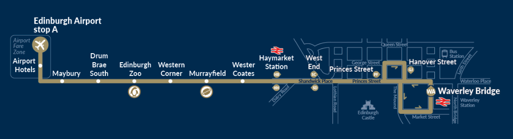

Becsült költség
Fejenként. Részletes bontás a Költségek fülön, ott állítható a létszám is.
Airlink 100 — 24/7 express
Edinburgh Airport ⟷ városközpont. Reptéren Stop A, a városban Waverley Bridge.
Airlink árak
Oda-vissza az Open Return £8.50 jobb, mint 2× £6.00 — £3.50-et spórolsz fejenként.
Airlink megállók (sorrendben)

Nekünk: Princes Street / Hanover Street a St Andrew Square-hez (Meki) van legközelebb — onnan sétálunk. A Waverley Bridge a végállomás.
Reptéri megállók (érkezéskor)
Az International 2 & UK Domestic Arrivals kijáratnál, a Multi Storey Car Park előtt.
Belfast — szállás ⟷ város
A szállás a Windsor Park mellett van, Dél-Belfastban. A belváros 2,7 km, kb. 32 perc séta.
Útvonal: stadion → vasúti gyalogos híd → Lower Windsor Avenue → Lisburn Road → Bradbury Place / Shaftesbury Square → Great Victoria Street → belváros. A Lisburn Road tele van kávézókkal, a séta nem büntetés.
Séta útvonal 🗺Belfast — reptér ⟷ szállás
A Belfast International (BFS) 29 km-re van a várostól.
Négyre oda-vissza ~£54. A köztes belfasti megállók a központtól északra vannak — nekünk a végállomás kell.
A 300-as jegyárnál a források eltérnek (£9 single / £13.50 retúr, illetve egy „Smartlink" £5-ös ár) — vedd meg a Translink appban, ott látod a valós árat.
A Grand Central egyben vasútállomás is, szóval nem kell kimenni az utcára — csak peront váltunk, és a Lisburn felé menő vonattal két megálló az Adelaide. Onnan a gyalogos hídon át pár perc a stadion, a szállás meg ott van mellette.
| Tétel | Kinek | £ / fő |
|---|
A todo tételeknél még nincs végleges ár. Ahogy megvan, beírjuk az ADAT.koltsegek részbe és minden magától frissül.
Mi van még hátra
🛂 UK ETA — enélkül nem engedik be őket
Magyar útlevéllel az Egyesült Királyságba elektronikus beutazási engedély (ETA) kell. Nem vízum, de nélküle a Ryanair fel sem enged szállni Budapesten.
MrMcSekinek nem kell, ha megvan a skóciai letelepedési státusza vagy brit/ír útlevele — ezt viszont érdemes leellenőrizni.
Az ETA a Budapest → Edinburgh járatnál számít; az Edinburgh → Belfast már belföldi út az Egyesült Királyságon belül.
Amit még nem tudok
- Meccsjegy ára és hol vesszük
- Pontos check-in / check-out időpontok mindkét szállásnál
- Az Airport Express 300 valós jegyára a Translink appban
- Ki mennyit fizetett már ki eddig